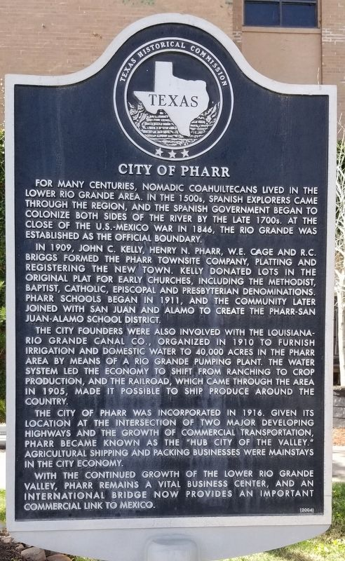

City of pharr Historical Marker
Marker Text:
"For many centuries, nomadic Coahuiltecans lived in the Lower Rio Grande area. In the 1500s, Spanish explorers came through the region, and the Spanish government began to colonize both sides of the river by the late 1700s. At the close of the U.S.-Mexico War in 1848, the Rio Grande was established as the official boundary. In 1909, John C. Kelly, Henry N. Pharr, W.E. Cage and R.C. Briggs formed the Pharr Townsite Company, platting and registering the new town. Kelly donated lots in the original plat for early churches, including the Methodist, Baptist, Catholic, Episcopal and Presbyterian denominations. Pharr schools began in 1911, and the community later joined with San Juan and Alamo to create the Pharr-San Juan-Alamo School District. The city founders were also involved with the Louisiana-Rio Grande Canal Co., organized in 1910 to furnish irrigation and domestic water to 40,000 acres in the Pharr area by means of a Rio Grande pumping plant. The water system led the economy to shift from ranching to crop production, and the railroad, which came through the area in 1905, made it possible to ship produce around the country. The City of Pharr was incorporated in 1916. Given its location at the intersection of two major developing highways and the growth of commercial transportation, Pharr became known as the "Hub City of the Valley." Agricultural shipping and packing businesses were mainstays in the city economy. With the continued growth of the Lower Rio Grande Valley, Pharr remains a vital business center, and an international bridge now provides an important commercial link to Mexico. (2004)"
